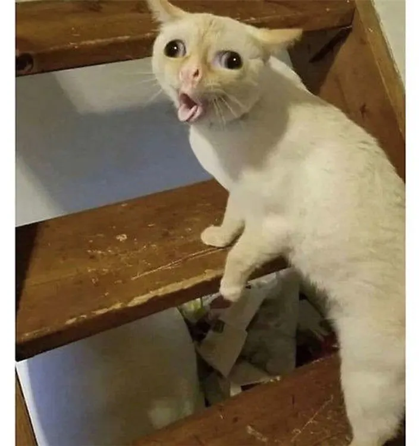

Esta parte de mi blog mostraré imagenes de mis gatitos favoritos :D
Uno de mis gatos favoritos como no, es el pana miguel. Mirelo primero

Es un gatito que tiene mucho potencial por que esta parado en 2 patitas
El segundo gatito como no, es el gatito disgustado

Uno de los otros gatitos es el gatito tosiendo como si su vida dependiera de ello y quiere guacarear 5 kilos de pelos

Y el ultimo gatito fachero y que esta seguro de si mismo es el siguiente conshadesumae